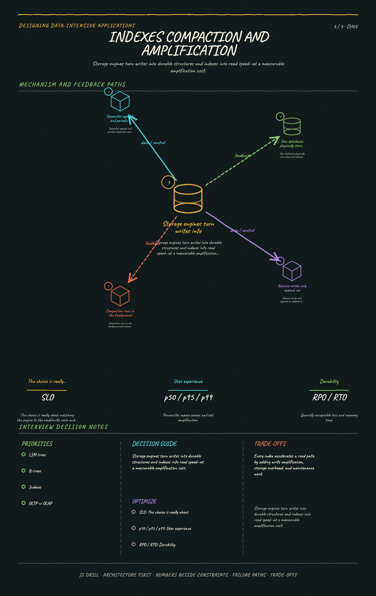

https://frosty110.github.io/js-drill/assets/system-design/infographics/ddia/ch03/indexes-compaction-and-amplification.pngHow databases physically store data and retrieve it again: the two dominant storage-engine families (log-structured LSM-trees vs page-oriented B-trees), how indexes are built on top, and how storage differs for transaction processing (OLTP) versus analytics (OLAP).
All questions, model answers and diagrams for Storage and Retrieval →